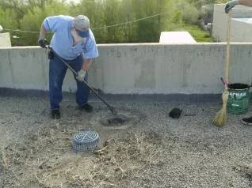
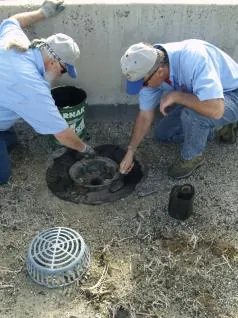
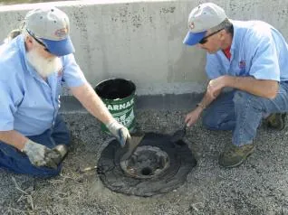
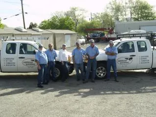
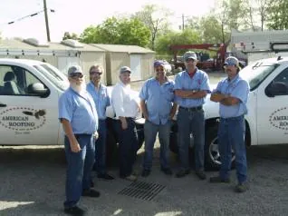
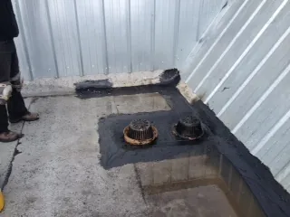
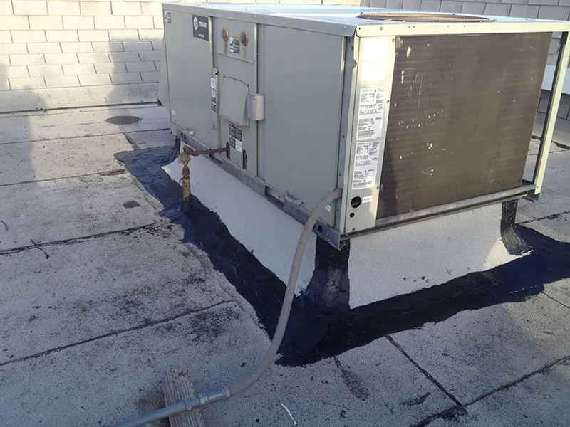
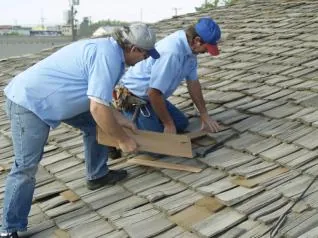
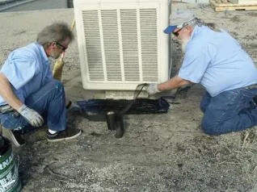
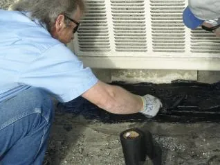

Request Free Quote!
Our Roof Repair Services

American Roofing Company is proud to be your local roofing contractor. We offer commercial roofing repairs and replacements on all types of buildings, big and small. We use the finest materials to ensure your roofing will stand the test of time.
We have done roof replacement on many well-known buildings in Salt Lake City and across Utah, including:
- The Bennett Federal Building
- The Assembly Hall on Temple Square
- Churches for The Church of Jesus Christ of Latter-day Saints
- And more












Commercial Roof Repair FAQ
What Types of Roofing Materials Are Recommended for Commercial Buildings?
No one specific roof type is recommended for all commercial roofs. However, some more popular materials include metal, thermoplastic, and PVC. Each has its recommended uses and can undergo commercial roof repair if it sustains damage.
How Can Roof Repairs Improve the Energy Efficiency of My Commercial Property?
A damaged roof can decrease the energy efficiency of the structure’s interior through air loss and increased heating and cooling usage. A commercial roof repair can resolve these issues, sealing off the damaged sections to prevent air from escaping. When your roof requires a patch in one area (such as fixing a leak or replacing a few shingles), this is when reroofing is applicable.
Residential Roof Repair FAQ
How Long Do Residential Roof Repairs Usually Take?
The time it takes to complete a residential roof repair depends on the extent of the damage, the roof’s size and angles, and other factors. Minor repairs can take one to five hours, while more extensive work may require several days.
Will My Homeowner’s Insurance Cover the Cost of Roof Repairs?
Whether homeowner’s insurance coverage for a residential roof repair depends on the cause of the damage. The repair will most likely be covered if weather conditions, like a storm or heavy snow, caused the damage. However, damage caused by standard wear and tear typically is not.
Contact American Roofing Company Today
When you’re looking for a local roof repair contractor in Utah, go with a company with the experience of repairing thousands of roofs—don’t leave your roof to chance. Contact American Roofing Company to get a quote on your roof repairs today.
Roof Repair FAQs
Here are some of the most commonly asked questions regarding roof replacement and repair: